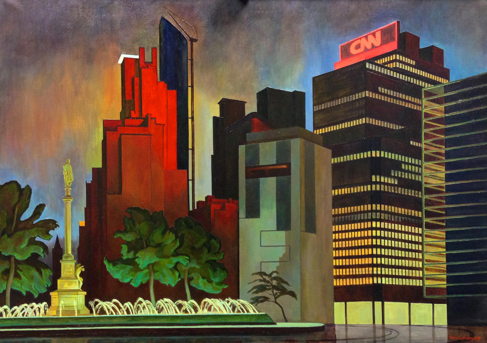

YFNY | презентация молодежных проектов
Член Московского Союза Художников и Союза Художников России Основная тема Урбанистический пейзаж мегаполисов Москва-Нью-Йорк. Основной интерес передать эстетику Нью-Йорка глазами русского художника.
#art #modernart #figurativeart #urbanlandscape #urbanart #russianmodernart #fineart #finemodernart #modernfigurativeart
Последние 8 лет основной темой творческой работы является Урбанистический пейзаж, в том числе по мотивам таких мегаполисов как Москва и Нью Йорк. Основным интересом в картинах предстаёт передать эстетику и красоту Нью-Йорка глазами русского художника, в традиции московской школы живописи. Многие из картин уже представлялись на Российских и зарубежных выставках, а также опубликованы в ведущих альбомах по современному искусству России. Художник продолжает работать над развитием этой темы в новых картинах. Особым интересом на сегодняшний день является столкновение современной архитектуры с памятниками исторического наследия города.
В 2000 окончила Московский Академический Художественный Лицей Российской Академии Художеств (МАХЛ РАХ) В 2006 окончила Московский Государственный Художественный Институт имени В.И.Сурикова (МГАХИ им.В.И.Сурикова), факультет живописи. С 2006 член Московского Союза Художников (МСХ. секция живописи) и член Союза Художников России (СХР). Стипендиат Министерства Культуры РФ 2007 года, 2014 года и 2016 года. В 2016 награждена медалью Союза художников России и премией по живописи по результатам всероссийской художественной выставки "Молодость России”. В 2015 награждена Золотым знаком Согласия “Pro augenda concordia” За вклад в развитие, укрепление и пропаганду культурных отношений и участие в Международной Белорусско-Литовско-Российская выставке “Диалог культур”.Letuvos Santarves Fondas. Фонд согласия Литвы. Дом Москвы. Вильнюс. Литва. В 2014 была приглашена в международную программу “Cité Des Arts” в Париже, где ей предоставили мастерскую для творческой работы. В 2010 награждена медалью Союза художников России и премией по живописи по результатам всероссийской художественной выставки "Молодые художники России". В 2007 награждена медалью Московского Союза Художников "За заслуги в развитии изобразительного искусства". Победитель творческого конкурса женщин - художников "Весна надежд - 2007", за живописные работы представленные на выставке. С 2001 принимает участие в ежегодных молодежных выставках МСХ, групповых молодежных выставках и выставках организуемых СХР и других художественных выставках, в выставках Российской Академии Художеств. Ежегодно принимает участие в художественных пленэрах в России и других странах мира. В 2008 Friendship Force International в г.Атланта, выставка в галерее "The Decatur Market & Gallery", по итогам которой была отмечена дипломами The Art Institute of Atlanta - Decatur. Friendship Force International. В 2009 Friendship Force International в г.Чикаго, выставка в галерее "Slayter Gallery", а также провела несколько мастерклассов в "Gallery 37". А также провела несколько выставочных проектов в г.Демойн штат Айова, и мастеркласс в университете Демойна. Произведения находятся в собраниях частных коллекций в России, США, Англии, Иордании, Сербии, Китае, а так же в коллекции государственного музея города Гамзиград (Сербия).
В данный момент Н.Суховецкая переехала в Нью Йорк и приступила к написанию новых картин, а так же заинтересована принимать участие в новых выставочных проектах в Нью Йорке и в других городах Америки, а так же различных программах представляющих культурные взаимоотношения России и Америки. (групповые и персональные выставки, мастерклассы)
Заинтересована в финансировании персональных и групповых выставочных проектов, а так же в помощи в организации выставок, предоставлении помещений под выставки.
Приобрести новые контакты, а также ознакомить русско-американскую аудиторию с моим творчеством и желанием принимать активное участие в культурной жизни русской Америки.
Тел.: (917)750-1076Эл. почта: ninastar2@gmail.com